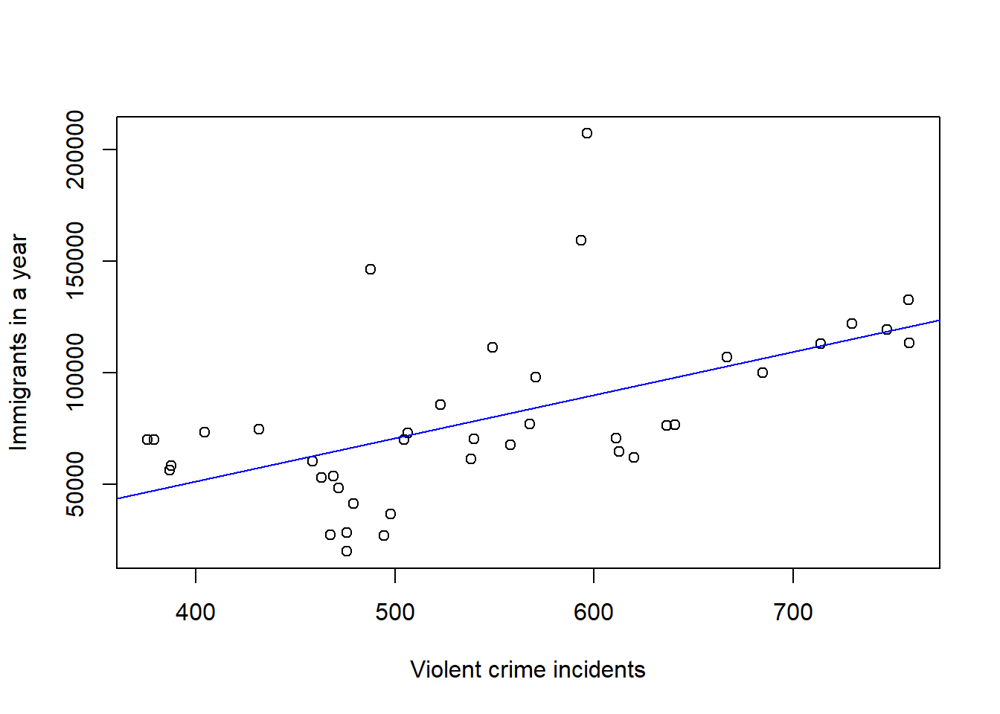
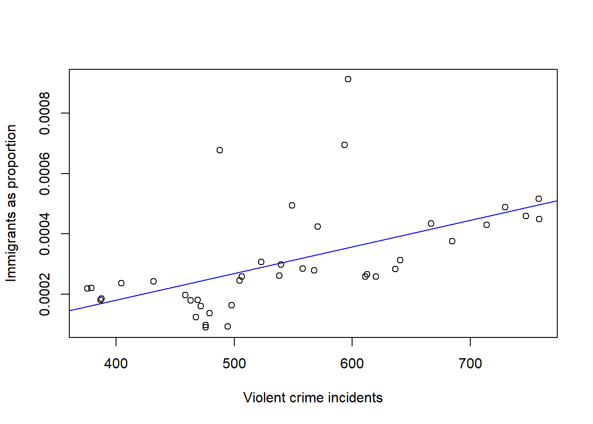
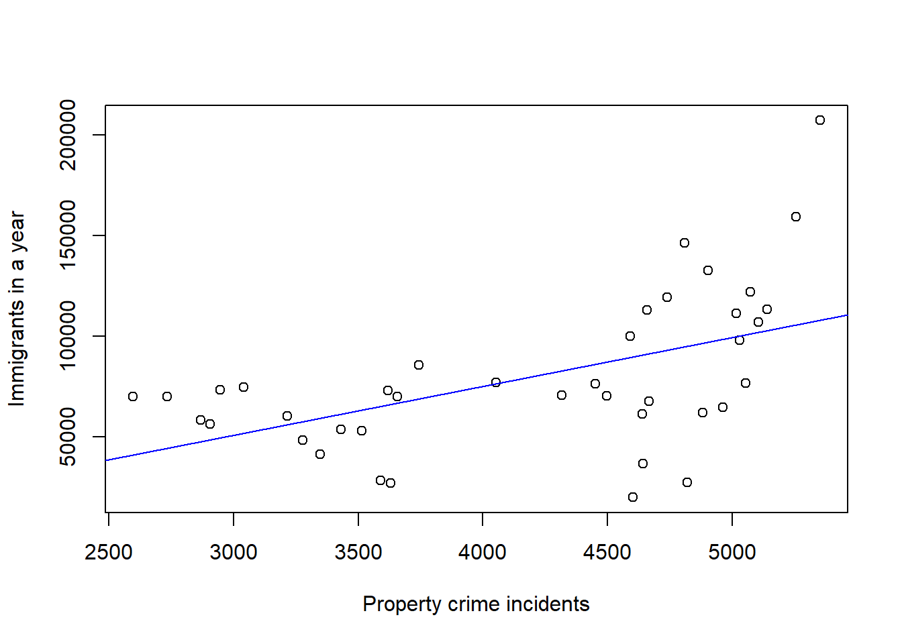
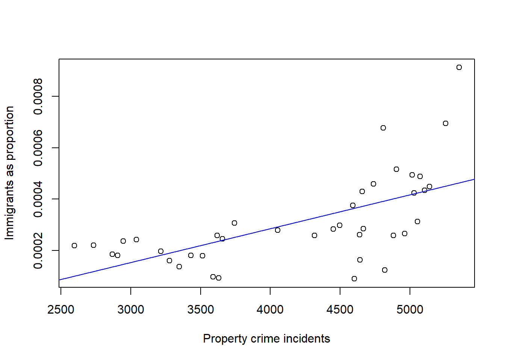

Lastly, let’s look at the relationship between crime rates and the number of refugees entering the United States from 1975-2014.
Again, we’ll begin by looking at violent crime rates.
#load data again
legal <- read.csv("legal.csv")
uscrime <- read.csv("USCrime.csv")
refugee <- read.csv("refugee.csv")
usapop <- read.csv("usapop.csv")
legal <- setNames(legal, c("immi_year", "immi_pop", "immi_percent", "pre2"))
usapop <- setNames(usapop, c("date", "uspop"))
uscrime <- setNames(uscrime, c("year", "population", "violent", "property", "violent_percentage", "pre"))
refugee <- setNames(refugee, c("refugee_year", "refugee_pop"))
# the following makes it so that we don't have abbreviated numbers showing in the x and y axes.
options(scipen = 999)
# Now looking at refugee data, 1975-2014
seventyfiveviolentcrime <- c(uscrime$violent[16:55])
violentrefugee <- (lm(refugee$refugee_pop ~ seventyfiveviolentcrime))
plot(seventyfiveviolentcrime, refugee$refugee_pop, xlab ="Violent crime incidents", ylab ="Immigrants in a year")
abline(violentrefugee, col="blue")
summary(violentrefugee)##
## Call:
## lm(formula = refugee$refugee_pop ~ seventyfiveviolentcrime)
##
## Residuals:
## Min 1Q Median 3Q Max
## -46132 -20836 -4440 10802 117763
##
## Coefficients:
## Estimate Std. Error t value Pr(>|t|)
## (Intercept) -25688.92 26945.50 -0.953 0.346430
## seventyfiveviolentcrime 192.83 48.44 3.981 0.000299 ***
## ---
## Signif. codes: 0 '***' 0.001 '**' 0.01 '*' 0.05 '.' 0.1 ' ' 1
##
## Residual standard error: 32920 on 38 degrees of freedom
## Multiple R-squared: 0.2943, Adjusted R-squared: 0.2758
## F-statistic: 15.85 on 1 and 38 DF, p-value: 0.0002986cor(seventyfiveviolentcrime, refugee$refugee_pop)## [1] 0.5425211The association between refugees gaining immigration status and the violent crime rate is linear, positive, and with moderate-to-strong strength. The correlation is 0.54 and the p-value is 0.00030. This is a significant result.
Let’s see what happens when we make the population adjustment.
refugee_adjusted <- c(refugee$refugee_pop)/c(usapop$uspop[16:55])
violentrefugee_adjusted <- (lm(refugee_adjusted ~ seventyfiveviolentcrime))
plot(seventyfiveviolentcrime, refugee_adjusted, xlab ="Violent crime incidents", ylab ="Immigrants as proportion")
abline(violentrefugee_adjusted, col="blue")
cor(seventyfiveviolentcrime, refugee_adjusted)## [1] 0.5442698summary(violentrefugee_adjusted)##
## Call:
## lm(formula = refugee_adjusted ~ seventyfiveviolentcrime)
##
## Residuals:
## Min 1Q Median 3Q Max
## -0.00017002 -0.00008863 -0.00003147 0.00001821 0.00055712
##
## Coefficients:
## Estimate Std. Error t value Pr(>|t|)
## (Intercept) -0.0001711954 0.0001225406 -1.397 0.170504
## seventyfiveviolentcrime 0.0000008809 0.0000002203 3.999 0.000283 ***
## ---
## Signif. codes: 0 '***' 0.001 '**' 0.01 '*' 0.05 '.' 0.1 ' ' 1
##
## Residual standard error: 0.0001497 on 38 degrees of freedom
## Multiple R-squared: 0.2962, Adjusted R-squared: 0.2777
## F-statistic: 15.99 on 1 and 38 DF, p-value: 0.0002829These results are very similar to the results without adjusting for population impact. Again, there is a positive, linear, moderate-to-strong relationship. The correlation remains 0.54. The p-value is virtually unchanged, and now sits at 0.00028.
In fact, these results also remind me of the first regression analysis in this project, the one comparing violent crime to legal immigration. I’m curious if there’s an interaction between refugee immigration and legal immigration in association with violent crime.
summary(lm(seventyfiveviolentcrime ~ legal$immi_pop[16:55] * refugee$refugee_pop))##
## Call:
## lm(formula = seventyfiveviolentcrime ~ legal$immi_pop[16:55] *
## refugee$refugee_pop)
##
## Residuals:
## Min 1Q Median 3Q Max
## -138.89 -38.76 -6.34 65.45 121.98
##
## Coefficients:
## Estimate
## (Intercept) 731.997056069169
## legal$immi_pop[16:55] -0.000422417767
## refugee$refugee_pop -0.001982313788
## legal$immi_pop[16:55]:refugee$refugee_pop 0.000000004930
## Std. Error t value
## (Intercept) 82.026742651654 8.924
## legal$immi_pop[16:55] 0.000101940595 -4.144
## refugee$refugee_pop 0.000788208578 -2.515
## legal$immi_pop[16:55]:refugee$refugee_pop 0.000000001017 4.847
## Pr(>|t|)
## (Intercept) 0.000000000119 ***
## legal$immi_pop[16:55] 0.000198 ***
## refugee$refugee_pop 0.016510 *
## legal$immi_pop[16:55]:refugee$refugee_pop 0.000023989836 ***
## ---
## Signif. codes: 0 '***' 0.001 '**' 0.01 '*' 0.05 '.' 0.1 ' ' 1
##
## Residual standard error: 73.46 on 36 degrees of freedom
## Multiple R-squared: 0.5796, Adjusted R-squared: 0.5445
## F-statistic: 16.54 on 3 and 36 DF, p-value: 0.0000006386After running a test, we see that the effect of being a refugee is 0.0000000049 point higher for violent crime for each additional unit of legal immigration.
Now let’s look at property crime in regards to refugee immigration.
seventyfivepropertycrime <- c(uscrime$property[16:55])
propertyrefugee <- (lm(refugee$refugee_pop ~ seventyfivepropertycrime))
plot(seventyfivepropertycrime, refugee$refugee_pop, xlab ="Property crime incidents", ylab ="Immigrants in a year")
abline(propertyrefugee, col="blue")
summary(propertyrefugee)##
## Call:
## lm(formula = refugee$refugee_pop ~ seventyfivepropertycrime)
##
## Residuals:
## Min 1Q Median 3Q Max
## -69723 -19412 3603 21206 99238
##
## Coefficients:
## Estimate Std. Error t value Pr(>|t|)
## (Intercept) -21816.987 27358.872 -0.797 0.430152
## seventyfivepropertycrime 24.227 6.415 3.777 0.000544 ***
## ---
## Signif. codes: 0 '***' 0.001 '**' 0.01 '*' 0.05 '.' 0.1 ' ' 1
##
## Residual standard error: 33420 on 38 degrees of freedom
## Multiple R-squared: 0.2729, Adjusted R-squared: 0.2538
## F-statistic: 14.26 on 1 and 38 DF, p-value: 0.0005444cor(seventyfivepropertycrime, refugee$refugee_pop)## [1] 0.5224129The relationship between property crime and refugee immigration is positive, linear, and has moderate-to-strong strength. The correlation is 0.52 and the p-value is 0.00054.
Lastly, let’s see what happens when we look at the same relationship, adjusting for population impact.
propertyrefugee_adjusted <- (lm(refugee_adjusted ~ seventyfivepropertycrime))
plot(seventyfivepropertycrime, refugee_adjusted, xlab ="Property crime incidents", ylab ="Immigrants as proportion")
abline(propertyrefugee_adjusted, col="blue")
cor(seventyfivepropertycrime, refugee_adjusted)## [1] 0.6233749summary(propertyrefugee_adjusted)##
## Call:
## lm(formula = refugee_adjusted ~ seventyfivepropertycrime)
##
## Residuals:
## Min 1Q Median 3Q Max
## -0.00027400 -0.00007348 0.00000380 0.00006569 0.00044799
##
## Coefficients:
## Estimate Std. Error t value Pr(>|t|)
## (Intercept) -0.00024124186 0.00011424811 -2.112 0.0414
## seventyfivepropertycrime 0.00000013165 0.00000002679 4.914 0.0000173
##
## (Intercept) *
## seventyfivepropertycrime ***
## ---
## Signif. codes: 0 '***' 0.001 '**' 0.01 '*' 0.05 '.' 0.1 ' ' 1
##
## Residual standard error: 0.0001396 on 38 degrees of freedom
## Multiple R-squared: 0.3886, Adjusted R-squared: 0.3725
## F-statistic: 24.15 on 1 and 38 DF, p-value: 0.00001734Unsurprisingly, there is a linear, positive relationship again. However, the association became stronger. The correlation is 0.62. The p-value remains small: 0.00001734.